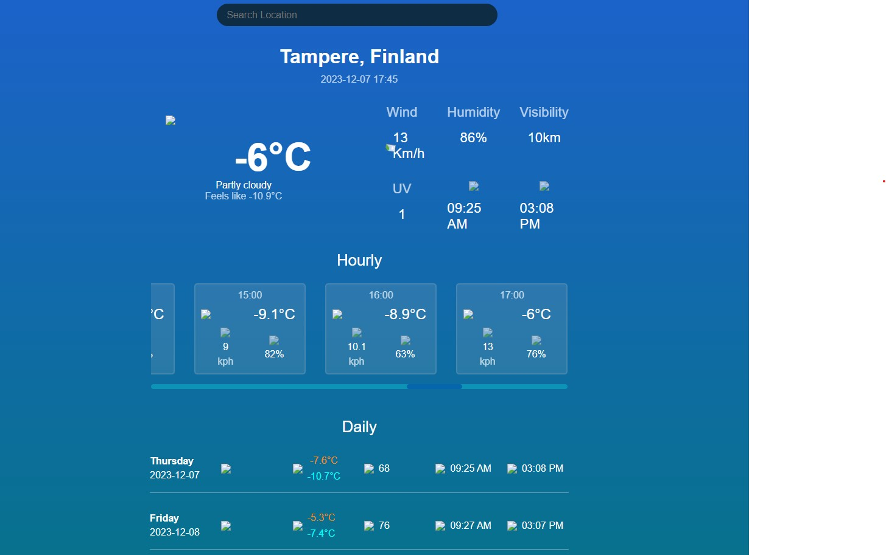

Hello! I'm Jami Hyvärinen, a self-taught coder who embarked on the coding adventure in 2021. My coding
journey began with C and progressed seamlessly into the realm of C++. After gaining a solid grasp of
low-level coding, I shifted my focus to web development, diving into HTML, CSS, and JavaScript.
Currently, my coding journey has led me to the realms of React and NodeJS, where I'm honing my skills to create robust backend applications. I've also delved into the WordPress environment, contributing to the creation and expansion of my clients' websites. With a passion for turning ideas into reality through code, I'm dedicated to continous learning and pushing the limits of what's possiple in the world of programming.
Contact me if you have any Projects you would be interested in creating.
Let's build and innovate together!! 💻🚀
Currently, my coding journey has led me to the realms of React and NodeJS, where I'm honing my skills to create robust backend applications. I've also delved into the WordPress environment, contributing to the creation and expansion of my clients' websites. With a passion for turning ideas into reality through code, I'm dedicated to continous learning and pushing the limits of what's possiple in the world of programming.
Contact me if you have any Projects you would be interested in creating.
Let's build and innovate together!! 💻🚀

Projects

Weatherfy
WebApp
Light webApp for checking weather using weatherAPI